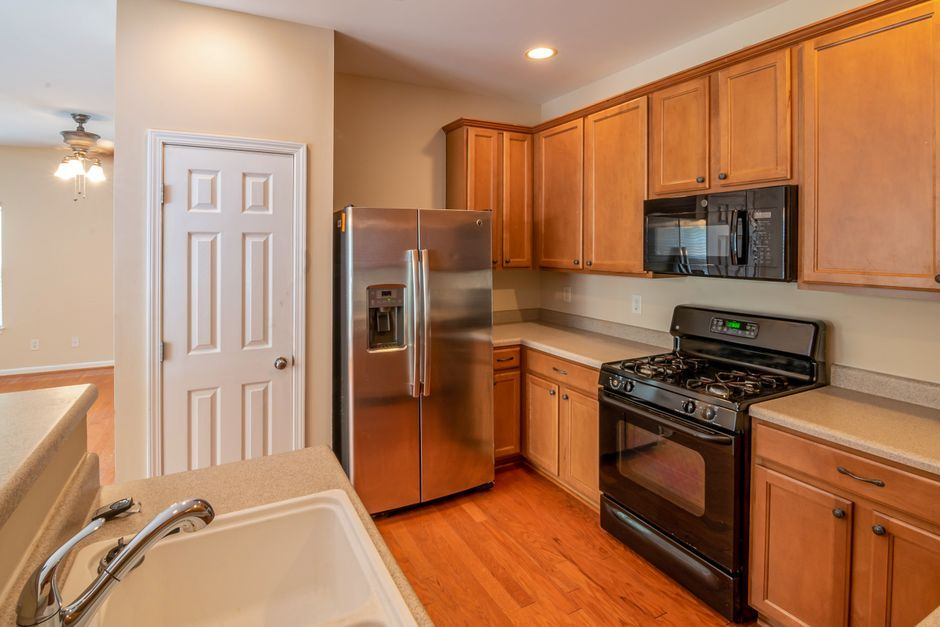

An old refrigerator or freezer comes out in one visit. Our crew unplugs it, shuts off and disconnects the ice maker's water line, takes the doors off if the doorway is tight, and dollies the unit out upright. Your part is emptying the food and letting it defrost the day before. Refrigerant recovery happens downstream, inside the quote you approve.
Most fridges and freezers leave a house for one of a few reasons. The kitchen fridge is being replaced and the store will not take the old one, or charges extra to. The garage fridge that has been humming along for fifteen years finally quits, or the electric bill makes the case against it. A chest freezer that made sense when the kids were home now holds two bags of ice. Or the house is being sold, rented or cleared, and nobody wants to inherit the appliance that came with it.
What to do the day before
A refrigerator is the one appliance where a little prep at home makes a real difference on pickup day.
- Empty it completely. Food, condiment bottles, the box of baking soda, the magnets and the papers on the door. Anything left inside goes with the fridge.
- Unplug it the night before if you can, and leave the doors open with a towel underneath. Frost in the freezer melts overnight, and a defrosted unit does not drip a trail across the floor on the way out.
- Wipe it out. A fridge that has sat closed after a power loss or a breakdown can smell strong. A quick wipe and an open door help, and it matters most if the unit might be donated.
- Know where the water line is. If the fridge has an ice maker or a water dispenser, there is usually a small shutoff valve behind it, under the sink, or in the basement or utility area. Knowing which one saves time.
- Clear the route. Kitchen islands, bar stools, the dog gate and the rug by the back door all sit in the path more often than you would expect.
Cleaning products that live on top of the fridge or in the garage next to it stay with you. Old chemicals belong at your city's household chemical drop-off, never in the back of a haul.
What the crew disconnects, and how it gets out
We handle the simple disconnections on the spot. The fridge gets unplugged. If there is an ice maker line, we turn off the valve, disconnect the line at the back of the unit, and catch the water that drains out of it. That is the same line we hold on every appliance, from an old washer and dryer pair in the laundry room to a water heater in a closet: simple plug and water connections yes, gas lines and house wiring no.
Getting it out is mostly a measuring problem. Modern refrigerators are deeper and taller than the openings many older homes were built around, and the fridge that went in through the garage door years ago may not fit back out through the kitchen doorway the same way. The crew checks the route first. Taking off the doors and handles often buys the space needed, and the doors go back on before the unit leaves so nothing falls loose on the dolly.
In older Plano neighborhoods we regularly haul an old fridge out of a kitchen that predates modern-depth units, and the historic homes near the McKinney square have kitchens built decades before modern appliance sizes, with some alley-only access, which is why we pick up an old garage freezer or fridge in McKinney with the route worked out before anyone lifts. Chest freezers are simpler: no doors to remove and no water line, just a heavy box that goes out level.
Do not leave a fridge out at the curb with the doors on. An old refrigerator or freezer left outside with working doors and latches is a real danger to children who climb in to play. If you set one out for any reason, take the doors off first. When we haul it, the unit leaves with the crew the same visit and never sits outside.
Will the city take an old refrigerator?
Often not at the curb, and this is where refrigerators differ from most appliances. Dallas's brush and bulky trash rules accept stoves, washers and dryers but specifically exclude appliances that contain coolant, including refrigerators, freezers and air conditioners. Prosper's trash and recycling page does accept refrigerators and freezers as bulk, but only with a tag from a certified technician showing the refrigerant has been removed. Other cities set their own rules, so check yours before rolling one to the curb. If you would rather not line up a technician's tag in Prosper, we can take the old fridge out of a Prosper garage instead. In Dallas, that coolant rule is the usual reason people have us haul the old garage fridge out of a Dallas home instead of leaving it at the curb.
The reason is the refrigerant. The EPA's safe disposal requirements for refrigeration equipment, written under Section 608 of the Clean Air Act, exist to keep refrigerant from escaping into the air when appliances are thrown away, so the refrigerant has to be recovered before the metal is scrapped. That is a step most homeowners cannot do themselves.
Where the fridge goes after it leaves
A refrigerator or freezer that leaves your house goes to a disposal path built for refrigerant appliances, where the refrigerant is recovered and the metal is recycled. A clean, working unit in good condition may go to a local donation partner instead. Habitat for Humanity's ReStore donation page explains what many ReStores accept if you would rather drop a working fridge off yourself. Our guide to appliance and electronics disposal in North Texas covers the items with special rules in more detail.
If the old garage fridge still runs, it is worth asking whether it should. ENERGY STAR's refrigerator page notes that an old refrigerator uses about 20% more energy than an ENERGY STAR certified model, and it suggests recycling an old second fridge rather than keeping it plugged in. A Texas garage in August is hard on a refrigerator, too, since the unit has to work against the heat around it all summer.
How the job runs
Tell us what kind of unit it is, where it sits, and whether it has an ice maker line. A photo helps, especially of the doorway it has to pass through. A crew looks at what you have and gives you a firm number before anything is loaded. The quote is the bill, and disposal is included. We are affordable and priced fair, based on how much there is to take.
If the fridge is one piece of a bigger job, such as a kitchen remodel with old cabinets and appliances or a garage cleanout where the old freezer is the anchor of the mess, we can take it all in the same visit. In Carrollton, where some neighborhoods are alley-served and the crew can often work from the back gate, an old freezer is a regular part of clearing out a garage or whole house in Carrollton. Our page on appliance removal covers the rest of the kitchen and laundry room. Call before noon and same afternoon is typical across the northern suburbs. When you are ready, tell us about the fridge.
Frequently asked questions
Do I have to defrost the freezer before pickup?
It helps. Unplug the unit the night before and leave the doors open with a towel underneath, so the frost melts before the crew arrives and nothing drips on the way out.
Will you take a refrigerator with the refrigerant still in it?
Yes. Refrigerant appliances go to a disposal path where the refrigerant is recovered by people equipped to do it, and that is already inside the quote you approve. You do not need a technician's tag first.
Can you disconnect the ice maker line?
Yes. The crew turns off the shutoff valve, disconnects the line at the back of the fridge and catches the water in it. If the valve is stuck or leaking, a plumber should look at it before the fridge moves.
Do you take chest freezers and upright freezers?
Yes, both, along with garage refrigerators, mini fridges, beverage coolers and wine fridges. Empty them first and let them defrost.
What if the fridge will not fit through the door?
The crew usually takes the doors and handles off to gain the space. If a doorway is truly too small, they will work out another route, such as through the garage or a patio door, before lifting.
Once it is empty and defrosted, the old fridge is usually out of the house in a short visit, and the space is ready for whatever comes next.